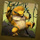
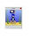

We'd like your opinion on the names of our servers!!

So, Can you tell us what City name you would like to change and what name
would you change it to??
Try to comment on just one server you think needs changing the most!!
Then we can make a poll with the one server that is most commented about, with
the best of the names!!
Have a think and let us know, maybe you think they are just fine as they are :))
Jessie

-2.jpg)


239 comments:
«Oldest ‹Older 1 – 201 of 239 Newer› Newest»you should change a server to''ballon'' or ''sun shine'' :)
P.S. first comment:)
Awesome. You should have a server called DownTown. Or Town Hall.
Umm Live Star To 'underwaterpalace' and star boys idea 'ballon'
lol im tvhead188
No Idea X.x
-Smartdetective
No No What About 'Chobocity' istead of moon-walk
A server name must be cho city
how about fredville? lol k. here r the serious ones: vayer ville, tina town, underwater, sun shine (starboys idea), and y not choville?
urm....
''Hawaii City'' Server O.o
-smartdetective
u shud change mimo city to somthing like chobots city
Umm,Maybe Sci-Fi City
Sci fi O.o
you should change chocolate to strawberry cool ya and you should change mimo city to agent city
p.s. (agent city should me only for agents =]
thxs jessie2000 for this idea
I think that sky city could be named starshine :)
That was my idea.Bye jessie :)
~tovictory
i think u should take milky way away and make another server called hero city:)
~felton~
i think we all need an interesting one it should be calle dcloud city in stead of mimo city or peace vill or cherrylissious or vayer city or evergreen or bubble pop or rainbowshine or lucky ladie or cholissious or gummy bears
lol ya got a lot to choose from but i hope ya like one of theres
from taylorswiftt1
:) maybe you could call one "candy land" or "dream city" lol!!
change sky city in ''no lag city'' :))
Ooh, or "creativity corner!" hehe :)
mimo-city to glow, star-dust, ,rainbow ,flare, or UFO.
hmmmmm choword:)
Hmm...
I think live star must change and be cho-world :P
~tania
also i was thinkign change sky city i mean i hate that name
lets change a name:lol/z,beta,blog,rules,dog,tv,name
good idea or not decide
yes or no?
1.yes
2.no
~fer~
~ferari225~
Hey i saw a bunch of people missing a former server so img gonna say a former one. "New Work City"
You should replace "Mimo City" with Big Grin or with Sweet Childhood.
How about a server called Pie? Or Moofin?
-elite
Oooh I agree with Verrac too! It would be nice to get back to the originals :))))
-elite
I'm sorry about changing 2, but I think we should change Vanilla and Chocolate to space names like Galaxy
or Jupiter :)
-fuffley
remove the milky way change it to Twix LOL
lolz te story thing says cho is 'far away in the universe' and erm... milky-way is close?
What about Eagle or Andromeda?
marshmallowland=D
orrrrrrrrr
ice-creamland
love them=D
Lostariel
You should rename "Mimo City" to "Zig City" lol just kidding.. :)
But i agree with Kymaster Agent City that would be awesome :D
ummmm mabey choclate could be changed to server pie
It would be cool if we got New Work City back. I wasn't around back then, but I sneaked on the SWF file and enjoyed the fun of a deserted world of Chobots. XD
~kymaster
@ZigZag1994
Zig, 4xx4 suggested agent city. xD
he took my picture, ahh! :{o
BTW, 4xx4, Agent City is a creative idea! ;)
~kymaster
I GOT ONE!!
CHOTOPIA
- markrsfan-
Im thinking gemini becuase the server can be named after a constalation?
how bout mocha or cappuchino or maybe mint xD
pie city
Fun city
Chobot city
Robot city
Safe city
heaven city (you guys had it though )
Party city !! i like that one
Play city
Srawberry city
sky high
Umm thats all from sammiex33
marsh mellow city
I think you should change mily way to strawberry-this is my opinion ^^
good luck guys
<3 Xhenet
i think u should change sky city into
choville
chocity
mars
fun town
lol
by iluvcookiezz
1:New Leaf City
2:Orbis
3:Mu lung
4:Cloud bridge
5:Sticker Street
6:Aqua Road
baverly hills lolz ya u can keet it its nice or cho-city.
Change Mimo City to Aqua Road or Bubbles
Heyy its me spirel i have kinda a few names sorry just sayin my apinyin so i have 10 dif names here they are
1.cho-city
2.funtasia
3.rocho-city
4.spire-city
5.fanticy-city
6.strawberry P.Si like that flavour:D
u no the way chobot has a city mimo city well thats mimo's city so lets have it like jess city or so or a mod city:D
7.demo-city
8.rabbid-city
9.sausage-city
10.yoyo-city
ok well thats my votes hope u like one of em sorry if none gets in just trying to help ya get stuff ok well good look to the people that win:D
chocity
~ Na9eR
or international-city
~Na9eR
hmmmmm live star would be good to change to hmmm maybe sunshine or cho-city
kiki-and-ada.tk
change one to ''Agent'' or ''Citizen'' or ''Mod'' Server
hey remember the server last time catville or dogville?
btw my cousin said vanilla should be named chipmunks and chocolate as chipettes lol
ooh i got one its from a song
its ''Funky Town''
or DownTown
i think chocolate should be changed to choco icecream
lol im so bored and that was random XD
~brian1king
Moon-walk to nicho city (lol. we need a server called that!)
"Muffin Land" or "Cookie City" or "Oreo Forever" plz xD
Luv,
Yellow
Yellow cookie city is the best:D
I loveeeeeeeeee cookies:)
~lostariel
I think mimo city needs to be changed.
Sugested Server Names:
-Galaxy Way
-Gravity City
-Shooting Star
-Metro Village
-Light Year
-Meteor Shower
-Spiral
-Starburst
-Nebula
Hope you like them =) -Vintage
umm... maybe sweetcandy or..
sweetchild lol!
~sara1001~
sky high?
hiki chocolate to chosworld or sky place ur choice thxs hiki u rock
turn it to hiki city because mimo has one city too...or u can turn it into strawberry.
and maybe icecream or..
childhood! well or maybe somthig else :)
menny love
~sara1001~
Change live Star to Hikiville :D
Vanilla And Chocolate, To:
Shooting Star and Black Hole
xD What do you think?
you should change live star to cosmic
Bubble gum, Cheese world, awesome land, (Keep sky city) childhood, cheesecake pie ville hiki ville nicho, land. all from ~Erpy ;)
hello guyz!
i think i suggested a nice name!?
cho-city!
umm.... i guess you should change mmoon walk for a new server called
berrychobots lol is the best think i could think about :D
my chobots name is fairy133
change mimos server to cookie server :D and change milky way to pie :D change moonwalk to michael jackson because pie is everyones faviot and cookie veryone likes cookies and michael jackson because hes famouse :D and he does the moon or and change live star to hawaii city :D thats all i want :D
change mimos server to cookie server :D and change milky way to pie :D change moonwalk to michael jackson because pie is everyones faviot and cookie veryone likes cookies and michael jackson because hes famouse :D and he does the moon or and change live star to hawaii city :D thats all i want :D
can you plz put these servers:
photo city
Fun city
Chobot city
Robot city
Safe city
heaven city (you guys had it though )
Party city !! (always in one day there should 2 partys on 5:00 chotime
Play city(i like having fun)
Srawberry city
sky high
-pappy6
cool ideas guys ;) ok here are mine
Jessie's city
Funsville
Moon
magic city
sparkle city
hope you like em ;)
OK jessie i got a super cool name volcano
hmm well maybe like "tropical paridise!' or "Cape Hope"
sky city replaced with MOOFIN!
I like the all servers name so I can't choose the worst :).
The name I like to a server is :
Meteor Cookie
~Tapmancs
Umm i think we should change milky-way to umm....... i think Water House or Water Village or Water Town
Ok sure hiki:D I would like to change Mimo City into Agent City;D
~Boy11
You have to get rid of Mimo city! And change it to bacon city!
i think you should change sky city to "littlebigplanet" lol
you shuld change sky city too:
1.cho-town
2.lunar beach
3.cake place!!!
4.candy street
5.moonlight land
6.PIE place
jadenyuki73 xD
i think you should change mimo city and make it into mars city or jelly bean city or candy city
you should change mimo city to mars cidy or jelly bean city or candy city
I think vanilla should be taken off:) and replaced with somthing like peace or love or somthing <33 but ii do like the name 'balloon' & 'sun shine'
Also, another thought.
Maybe, put the servers as mods.
-Vayerville
-Chobotland
-tinatown
-smufetcity
-jessiesworld
ect...
I also like the idea of 'galaxy'!
Hope you like my ideas!.
Juicyqueen. :)
Here are my names
whirlpool
clusters
cloudy
charon
hydra
nix
supernova
green land
emerald
meteor
comet
shooting star
hope you guys liked it.
(^_^)
Unni
i think we should change mimo city all of the others stick out cooly sort of. I think it should be something like ocean or oceana pronounced occhhh aahhh na or a city could be only for mods and agents its just an idea.
Here are my teories :
-Super Sun
-Pepper Planet
-Gingerbread Galaxy
-Blackhole
-ChoboChrisps
-Mod meteor
-LovelyVille
-Buddy Crater
-Shooting Star
I already have more but I must go now :(
~Tapmancs
Mimo city to Dark Star
OOH OOH! i got one! you all say chocity or chobocity but what about Chobotica? my idea is Chobotica
Server to be replaced: Mimo City
Why should it be called after mimo he is always on club penguin and he is a famous gamer but why not call a server any name like herip land?
New server name: Big Grin
I think there should be a server called "ballon" like starboy's idea and a server called "Cho-City" like Wowo said. (And your welcome for helping you starboy and wowo with your ideas) I have one idea of my own its that a server should be called "server" or "robots city" ok so bye hiki and all the mods! :)
-5smartboy
heres some name ideas
1. cookie do'hme
2. crystal city
3. chotopia
4. chopix valley
5. cho town
i sure am likeing my C's O_o
Change live star to Cho City
34sr
I'm with verrac and herip, Big Grin and Sweet Childhood should come back!
what about a server called cho or happy town
what about new choville honocholu fabion
how about chobot rocks sever :) or how bout the famos modrators like jessie smufet tina or any you pick sorry mods if i spelt your name wrong i like the idea ballon and underwaterplace or starboys and star girls hows about vannilla change to star girls rock and live star change to star boys rock and heres another idea i think we shoulld have is like one sever with the goddest agent and moderator like for example mousyblack or jessie or isaha or smufet or the people that measssge us like tina gothic some thing like that :) hope ya alll have a nice weekend ;)
ok change mimo city because idk who mimo is i think he is a mod but if he gets a sever how come you dont change it to party cho 101 sever or cool chos only or Ooh i got one Mercury or kryoptonite you know the stuff rom superman
I know!
ice_city!
lol ;D
ice_dog
Oh and my chobot name is lolz552
moon walk 2 mod city :)
you should change mimo city to lollipop
Vannila should be changed to Glowing comet XD or party comet
Umm...
Pie street
Rainbow street
Team town
Sunny vile
p.s I liked the old name for sky-city. Heaven
Coolcrisp
How about...
Circus City,Chobots City,or Flower Palace!
Thankz,
Weme124
Here's more
-Pie Town
-Moon City
-Lol Town
-Party Palace
-Mod City
-The Crater Mater
-Smile Town
These more!
Thankz,
Weme124
P.S change Milky-way
The server as martin luther or walt disney
you should change sky city to strawberry
Here are some names.
Laboratory
Party Street
Hot Chocolate
Learning Room
Sunny set
Beta Street
Chobot Rocks
Candy Street
Pom Pom Sunshine
Wizard People
Bingo Tingo
Cheesy Morning
Thumbs Up Ville
Thumbs Down Ville
Epic World
Video Street
Flower World
Home Sweet Home
Star Ville
Scary Night
Doodle World
Nature Street
Muddy Place
Gooey Cheese (lol)
Lol Land
Rofl Your Ville
Afk Day
Brb Ville
Painted Town
DJ Town
Un Named (lol)
Balloon Palace
Chobots Workings
Rainbow Day
Crayon's Palace
Pencil Ville
Server Love
Valentine's Day
St. Patrick's Day
Funky Penguin
Spoon Town
Crocodile Tongue
Bacon Ville
Eggs Ville
Ham Ville
Hash Brown Ville
Maple Syrup Ville
Sauce Palace
Meat Ball City
Pasta Street
Cloudy Palace
I'll think of more
Bye!
kirby7777
what about Party City or like Citizen Town!
~Blue7monster
p.s. i am not an agent just beacuse of my picture
party city
Mimo City to Artic city. :)
I think Chcolate should be changed to "Smart Teeth"!
maybe mimo city to like cho or chobots city i think.
Chessie123 =))
CALL IT CHOVANIA you could just call it WHITE RAINBOW or call it SKYLINE-CITY THEY ARE MY IDEAS!
HOPE U CHOOSE 1
~privacykid/cahhty~
Doll Palace Haha Joke :)
Umm Rainbow, 'Big grin' (I think that should come back :P) And Balloon :)
Hey! I think all the servers should have something to do with space, so u can change Chocolate and Vanilla to something like Galaxy or Jupiter. Maybe some other planets 2 :)
-Fuffley
P.S maybe u can look at my blog? It is http://veryfuffley.blogspot.com
Check it out :) It has a pic I made of Hiki, and I made a pig =)
How about "Blue Cosmos" or "Planetarium"(did I spell it right?).
Actually, I'd like anything to do with space; "Meteor" or "Shootong Star". After all, the Chobots world is in space, right?
I also noticed that a lot of people wanted the servers to be named after moderators. This is gonna be tough for you to choose!
Anyways, thanks for reading. =P
hmmm i think Choville or Cho Ville (with a space)would be good!
~Star
Dynamite, Cinnamon Swirl, Atlantis, Lollipop :P what ever you like, oh cities to tade umm moon walk and milky way Amber780!
Uhh maybe live star or mimo city
to...
1. Choland
2. Sunny Side
3. Secret Server
Secret Server- A server for only mods so they dont get crowded and a few lucky friends of mods could go if invited. Would be a great party server!
Mimo city to strawberry or
Moon walk to strawberry, id rather get rid of mimo city though ^.^
I think you should change live star to cho-town or like cho-ville
Thats my opinion!
~pink~
And I agree with some people too~! i think they should do with space like rcoket-blast or something or like shootingstar
I think milky-way should be vayer ville Hiki happy chaneging
make a city called coh city and remove mimo ciy
change live star to vayersoft village. :) -volcom213
i think you should change moon walk to nicho city:) or maybe even chobot city. thanks, i hope you enjoyed.
-Dannyotoy
I think that the server Live Star to Cloud City like in the 5th Star wars Movie. That would be soooooooooo cool. P.S If you haven't figured it out yet I'm a huge Star Wars fan.
maybe you shoud make moon walk
fireflie or doodle or fridle or thunder or maybe cookieville
change mimo city to...ummmm..."sweet escape" hope u likey XD
i think we should change mimo city to something cause its not really fair to name a city after a chobot
so mabey like,
Magic cho
moon dust
rainy day
thats just some ideas
How about Spaceville? Or Magicland :))
-beebopadoobop
how about Hamsterville instead of Mimo City? :p or we could harf Sweet Childhood back? :D
You should change Chocolate to Galaxy or Earth.
I think Live Star should be
Changed to Shooting Star. :)
happy2fun411
I still like my idea of "Cho-Kindom" but we have the servers Chocolate and Vanilla, Strawberry is missing!!! Then once more severs get added we should call one "Neapolitan". This is harder than i thought, here are the names:
Cho-kingdom
Strawberry
Neapolitan
oh and the servers that should get replaced with those names are:
Milky way
Mimo City
Moonwalk
change live star to chobots city
change live star to chobots city :)
~fox
Hi Jessie, In my opinion i think that we should change the server Live Star to Sunshine i recon that it is a great name for a server! Thank-you.
sarahd11
Well I think a god one would be Robot City maybe and change mimo city to Robot City thats what I think
you should change the mimo city server.change it to chobot town!
How abooooooout....
MOOFIN CITY!!!!!
lol :3
Change Mimo City to Well of Cho!
Or maybe Birds Eye!
i agree with verrac how about sweet childhood :D
-smartdetective
Hi my opinion is way to Milk Glitter park. I hope you enjoy.
Nicolai is awesome imagine Nicolai as a server plz
- Nicolai
I know how about Moon Star or Comet Chaser ?
i think you should call moon walk straberry cause you can have all 3 top flavors choclate,vanilla,and then if you do it will be thhen straberry :D so i think straberry would be a good fit or it should be nemed moderater city
I think you should change mimo's city to ''Chobo'' becuase why have a city called mimo city when hes never on?
~Abree12
I think we should make chobotland

I like every city name but Mimo city.
How about "Caramel", to go with chocolate and vanilla
i go for "chicken"
I think you should change Live-star
To Waffle Land Or Pie Land :)
-jg
or "comment" i think thats good!
plz make me an agent
-dementor
Hmmmm.....
I was thinking instead of vanilla we could name it Ice-cream it sounds preety kool :D
~Minymo123
I think "Vanilla" should be taken off and replaced with "Jessie City". You know, like Mimo has his own city...and what does Vanilla have to do with chobots? xD
I think that Mimo City should be changed to Balloon like Starboy24's idea! Thx Jessie for letting us vote on this
Love, Chobot Name: Smilingelephants
Mimo City to Balloon City, i like the idea, starboy24 :]
chozone
ermmm Live Star to maybe like Hiki City or anything
I'm not too sure on a replacement Idea, but I never really liked all of the advertising with mimo. I think the flag and shirt would be enough. Yeah, i really think mimo city should go :) Oh, wait. mabye It could be Denmark! ( it sounds like a good name to me X3 )
How about Chobots City? XD
Well everyone seems to have the same ideas, something with space, the old ones, balloons, and sweets!
lol nice ideas guys
BTW i read someone said we should change one of them to "Funky Town" lol i like that idea! (but now the song is stuck in my head -.-)
I think we should change Mimo City the most, cuz i don't really think its fair he gets his own city....
I think maybe you should name a city
Vega
Its a nice catchy name, plus its after a star somewhere.
eh thats all the ideas i got though. I just hope whatever server gets renamed, that its something catchy.
p.s. whoever said to change milky way into twix ROFL!
down under, rainy day, jessie city ophroma and fly city.
those are all i got
names by fangartist2 and sizor
I think you should change vanilla to foogie or Dream catcher!
Chobots Your Family Game!
~Chuchucarey~
I think moon walk or vanilla should be changed to.. Pop place, or star city.. I think there should be a city for agents and mods ONLY hope this helps :) Good luck Jess!
I think live star needs changing...
So,how about moon shine? Ok,you probably don't like it,but it's worth a try,right?
live star to kingdom
I think Mimo City to Fun City, Cho City, Caramel, Rain City, Flower, Rainbow, Balloon, Happy, Cho Walk, Royal City, Game City, Fun Fun, Rock City, Band City, Cho Land, Robots, Chofun or Sunshine.
a new server name should be "Sunny"
~kooldude09~
what about mod city or a city named after a mod like jessie?

Hey Jessie i Would Like To Change Moonwalk Or Vanilla Into ''Rocker City''
I Hope You Like It =D
~Joe900~
Im with verrac, herip, William ;)
You should give us back Sweet Childhood and Big Grin ;)
maybe milky-way, and change it into Space or space world.
~blacky321
Call it Meteor
Call server Live start meteor
Lemonsqueezy :)
or Sweet Childhood i loooove this server:)
how about mimo city to chobot city or twinkle star
chocolate should be changed into:star mall or starwars?lol hmmm how about:vayersoft or firetown or SWIMMING POOL! hmmm your should create some updates or J2KANDKAKASHI423 ???
downtown sounds good jess
I Think Mimo City Should Be Called Sci-Fi City :D
Cho-Town
I've got a few names too!
what about strawberry?
or cherry?banana?Peach?
lolly999 from chobots.de
Paulyte2009 server :DD
CHANGE mimo city to:
Seashine
Sunset
MoonDust
Just change Mimo....
Its unfair. kinda
hmmm how about skyflakes or snowflakes instead of vanilla? x.X lol!
xoxo
dianamisaki:)
i dont really like mimo city cause it just talks about a special person u should chang it to somthing like earth or moon that would be cewl
well maybee 1 of severs agents city
another one citizen city another one
non citizen city and 1 for every body cho-city and by the way the name of city can let u know who can get in ~meme1999~:):)
I have lots of names to say. Some are cool. so here they.
Rain boll
Water splash
Lazy city
Eating city
Holly wood
Agents Hq
Lolly pop
North pole
Party world
Caps lock
Ninja Town
Canada land
Sports city
Lazy baby
Dark town
Nosy town
Wood pop
second life
Paper city
Holiday word
Sharp word
Batman
Mimo fan
Under Ground
Fancy Nancy
Pop corn
Poping city
Falling city
Nothing good
Crazy world
Winter city
Thats all the servers I could think of
Milkshake!
200 comments :D
sky city
Comments are preserved read-only.